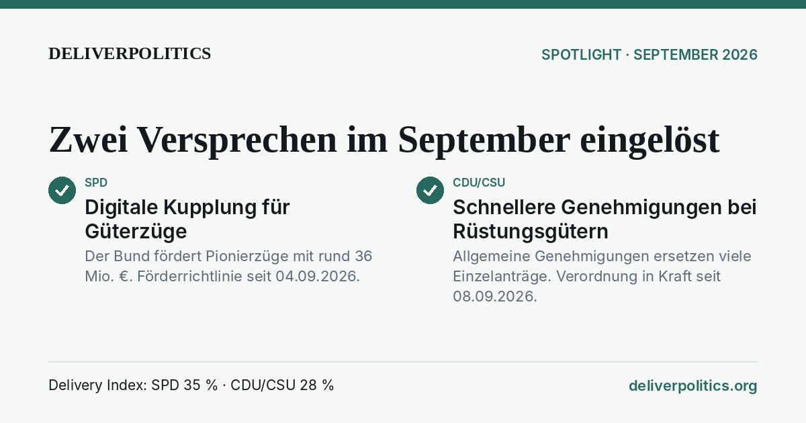

Versprochen. Gehalten?
Wie viel haben die Parteien von ihrem Wahlprogramm umgesetzt? DeliverPolitics prüft jede Zusage gegen geltendes Recht – Zusage für Zusage, Monat für Monat.
Bund
Alles zum Bund →SPD
Kernversprechen · von der Partei selbst herausgestellt · was zählt?0 %0 von 5 Kernversprechen erfüllt
0 beschlossen · 1 gebrochen oder Frist verfehlt · auf einen Abschnitt zeigen für Details
Bei 5 Kernversprechen verändert jedes den Wert um 20 Punkte.
Alle 5 Kernversprechen als Liste
- Einkommensteuer-Entlastung für Gering- und Normalverdiener · nicht erfüllt
- Mehrwertsteuer auf Lebensmittel auf 5 % · nicht erfüllt
- „Made in Germany“-Bonus · nicht erfüllt
- Deutschlandfonds einrichten · nicht erfüllt
- höherer Mindestlohn: 15 € · Frist verfehlt
CDU/CSU
Kernversprechen · von der Partei selbst herausgestellt · was zählt?35 %27 von 77 Kernversprechen erfüllt
Alle 77 Kernversprechen als Liste
- Pendlerpauschale erhöhen · erfüllt seit 01.01.2026
- Entrümpelungsgesetze · erfüllt seit 04.07.2026
- Bürokratie-Checks · erfüllt seit 27.08.2026
- Netzentgelte senken · erfüllt seit 01.01.2026
- Heizungsgesetz der Ampel abschaffen · erfüllt seit 29.07.2026
- Bundesdigitalministerium einrichten · erfüllt seit 06.05.2025
- Hightech-Agenda vorlegen · erfüllt seit 30.07.2025
- Bürgergeld durch Neue Grundsicherung ersetzen · erfüllt seit 01.07.2026
- keine Vermögensteuer · erfüllt (Bestand)
- Renteneintrittsalter bleibt · erfüllt (Bestand)
- keine Rentenkürzungen · erfüllt (Bestand)
- Aktivrente: 2.000 € im Monat steuerfrei · erfüllt seit 01.01.2026
- Agrardieselrückvergütung wieder vollständig · erfüllt seit 01.01.2026
- keine zwangsweise Flächenstilllegung · erfüllt (Bestand)
- Wolfsbestand regeln, Wolf bejagbar machen · erfüllt seit 02.04.2026
- Grenzen kontrollieren · erfüllt seit 07.05.2025
- Zurückweisungen an der Grenze · erfüllt seit 07.05.2025
- wieder nach Syrien und Afghanistan abschieben · erfüllt seit 23.12.2025
- Familiennachzug zu subsidiär Schutzberechtigten aussetzen · erfüllt seit 24.07.2025 (befristet)
- Unterstützen von Terrororganisationen konsequenter unter Strafe stellen · erfüllt seit 02.04.2026
- Nationaler Sicherheitsrat im Kanzleramt · erfüllt seit 27.08.2025
- Ukraine unterstützen, auch mit Waffenlieferungen · erfüllt (Bestand)
- Zwei-Prozent-Ziel – mindestens · erfüllt (Bestand)
- Express-Einbürgerung rückgängig machen · erfüllt seit 30.10.2025
- Ehrenamts- und Übungsleiterpauschale spürbar erhöhen · erfüllt seit 01.01.2026
- am Ehegattensplitting festhalten · erfüllt (Bestand)
- keine Haftung für Schulden anderer EU-Staaten · erfüllt (Bestand)
- Unternehmenssteuerbelastung auf maximal 25 % · beschlossen, gilt ab 01.01.2032
- elektronische Fußfessel verstärkt einsetzen · beschlossen, gilt ab 01.07.2027
- Einkommensteuertarif anpassen, niedrige und mittlere Einkommen entlasten · nicht erfüllt
- Überstundenzuschläge bei Vollzeit steuerfrei · nicht erfüllt
- wöchentliche statt tägliche Höchstarbeitszeit · nicht erfüllt
- digitale „Work-and-Stay-Agentur“ · nicht erfüllt
- Rest-Soli abschaffen · nicht erfüllt
- Abschreibungen verbessern (AfA-Tabellen) · nicht erfüllt
- Verlustverrechnung verbessern: Verlustrücktrag · nicht erfüllt
- Verlustverrechnung verbessern: Mindestbesteuerung · nicht erfüllt
- Statistikpflichten abbauen · nicht erfüllt
- nationales Lieferkettengesetz abschaffen · nicht erfüllt
- Übererfüllung von EU-Recht zurücknehmen · nicht erfüllt
- Stromsteuer senken · nicht erfüllt
- 3,5 % des BIP für Forschung und Entwicklung bis 2030 · nicht erfüllt
- neue Raumfahrtstrategie · nicht erfüllt
- „Gründerschutzzone“ · nicht erfüllt
- höhere Freibeträge bei der Grunderwerbsteuer · nicht erfüllt
- höhere Freibeträge bei der Erbschaftsteuer · nicht erfüllt
- höhere Freibeträge beim Sparen · nicht erfüllt
- Frühstart-Rente: 10 € im Monat · nicht erfüllt
- Videokameras und automatisierte Gesichtserkennung an Brennpunkten · nicht erfüllt
- Speicherpflicht für IP-Adressen · nicht erfüllt
- Cannabis-Gesetz abschaffen · nicht erfüllt
- weitere sichere Herkunftsländer · nicht erfüllt
- alle freiwilligen Aufnahmeprogramme beenden · nicht erfüllt
- Leistungen für Ausreisepflichtige nach „Bett, Brot und Seife“ · nicht erfüllt
- Ausweisung · nicht erfüllt
- Entzug des Aufenthaltstitels · nicht erfüllt
- Verlust der deutschen Staatsbürgerschaft · nicht erfüllt
- Moscheen schließen, in denen Hass und Antisemitismus gepredigt wird · nicht erfüllt
- echte Zollpolizei · nicht erfüllt
- Kriminelle müssen Herkunft ihres Vermögens nachweisen · nicht erfüllt
- aufwachsende Wehrpflicht · nicht erfüllt
- verpflichtende Integrationsvereinbarungen · nicht erfüllt
- generelle doppelte Staatsbürgerschaft rückgängig machen · nicht erfüllt
- Elterngeld verbessern · nicht erfüllt
- Kindergeld anheben · nicht erfüllt
- steuerliche Absetzbarkeit von Betreuungskosten erhöhen · nicht erfüllt
- Selbstbestimmungsgesetz abschaffen · nicht erfüllt
- Teilqualifizierungen fördern · nicht erfüllt
- Hinzuverdienstmöglichkeiten beim BAföG verbessern · nicht erfüllt
- Bauordnungs- und Raumordnungsrecht entschlacken · nicht erfüllt
- dauerhaftes Bauen, wo bisher nur Sonderregelungen · nicht erfüllt
- energetische Sanierung von Erbschaft- und Schenkungsteuer abziehbar · nicht erfüllt
- digitale Kfz-Anmeldung als Standard · nicht erfüllt
- digitale Fahrzeugakte · nicht erfüllt
- Zahl der Beauftragten halbieren · nicht erfüllt
- mindestens 10 % weniger Personal in Ministerial- und Bundestagsverwaltung · nicht erfüllt
- an der Schuldenbremse festhalten · gebrochen seit 25.03.2025
erfülltbeschlossenoffengebrochen oder Frist verfehlt
Spotlight September 2026

Im September 2026 sind zwei weitere Zusagen aus den Wahlprogrammen wirksam geworden – je eine von SPD und CDU/CSU.
Im September 2026 geändert
Alle Statusänderungen des Monats aus allen Parlamenten, Kernversprechen zuerst.
BundUmsetzung der Digitalen Automatischen Kupplung fördern
SPD · erfüllt ab 04.09.2026
SPD · erfüllt ab 04.09.2026
BundAusfuhrgenehmigungen deutlich beschleunigen
CDU/CSU · erfüllt ab 08.09.2026
CDU/CSU · erfüllt ab 08.09.2026
Länder
Alle Länder →Baden-Württemberg
Landtag von Baden-Württemberg
18. Wahlperiode · Wahltag 08.03.2026
in VorbereitungRheinland-Pfalz
Landtag Rheinland-Pfalz
19. Wahlperiode · Wahltag 22.03.2026
in VorbereitungSachsen-Anhalt
Landtag von Sachsen-Anhalt
9. Wahlperiode · Wahltag 06.09.2026
in VorbereitungBerlin
Abgeordnetenhaus von Berlin
20. Wahlperiode · Wahltag 20.09.2026
in VorbereitungMecklenburg-Vorpommern
Landtag Mecklenburg-Vorpommern
9. Wahlperiode · Wahltag 20.09.2026
in VorbereitungSo entsteht die Zahl
1 · Zerlegen
Das Wahlprogramm wird in überprüfbare Zusagen zerlegt.
2 · Prüfen
Für jede Zusage steht vorab fest, wann sie erfüllt ist. Maßgeblich ist geltendes Recht.
3 · Zählen
Der Index ist der Anteil erfüllter Zusagen. Jede zählt gleich.